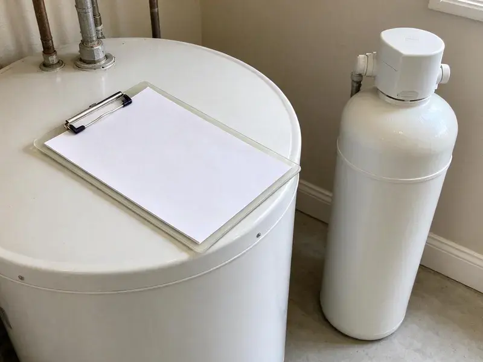

Basement Leak Repair in Hawthorne, CA
We repair leaking supply lines, drain pipes, sump systems and wall seepage in basements across Hawthorne, CA, frequently the same day you call.
- Same-Day Leak Detection
- Licensed and Insured
- Moisture Meter & Camera Testing
- Upfront Written Pricing

Stop the Water and Protect Your Lower Level in Hawthorne, CA.
We repair the leak, test the fix and tell you plainly what it will take to keep the space dry.
Your Local Pros for Basement Leak Repair in Hawthorne, CA
We understand the challenges of basement waterproofing in Southern California and employ targeted methods to address everything from hairline cracks to major water breaches, protecting your property from structural damage and mold growth.
Our expertise includes:
- Hydrostatic pressure relief solutions
- Modern Leak Detection Technology
- Foundation Crack Injection Systems

Additional Plumbing Maintenance Services in Hawthorne, CA
Our maintenance and specialty plumbing services in Hawthorne, CA protect your home year-round and extend the life of every system.


Customers
Why Choose FKM Plumbing for Basement Leak Repair in Hawthorne, CA?
Basement leaks, if left untreated, can lead to serious structural issues and health hazards. FKM Plumbing provides durable repairs that address the root cause, not just the symptoms.
- Code Compliant, All our work adheres strictly to local plumbing and building codes in Hawthorne and Southern California.
- Lasting Solutions, Our repairs are designed to withstand Southern California weather, including heavy rains and changing soil moisture.
- Property Protection, We safeguard your home from mold growth, structural damage, and costly repairs associated with basement leaks.
Citywide Coverage
FKM Plumbing proudly serves every neighborhood in Hawthorne, offering dependable basement leak repair services. Whether you are downtown or in the surrounding suburbs, our technicians are ready to help.
Experienced Team
Our technicians are trained on thermal cameras, acoustic listening equipment and drain cameras. That toolset lets them confirm the source fast in spaces most plumbers rarely see.
Safety-First Approach
Standing water in a basement can reach outlets, water heaters and furnace components, so we check for electrical hazards before we work. All repairs meet the plumbing code used in your city or county.
Trusted Certified Hawthorne Plumbing Services Professionals
At FKM Plumbing, we take pride in providing licensed, certified plumbing services throughout Hawthorne, CA. Backed by recognized industry credentials, our experienced plumbers combine technical skill with genuine customer care. Whether it is repair, installation, or maintenance, we follow strict safety and quality standards to deliver long-lasting results you can trust.
Call Us Now PHCC Plumbing Contractor Recognition
PHCC Plumbing Contractor Recognition Better Business Bureau (BBB) Accreditation
Better Business Bureau (BBB) Accreditation Angi Certified Pro
Angi Certified Pro ISO 9001 Quality Management Certification
ISO 9001 Quality Management CertificationEffective Basement Leak Repair Services in Hawthorne, CA
Wall and Slab Seepage Repair in Hawthorne
When water enters through foundation walls or the slab joint, the cause is usually surface water pooling against the house. Most homes in Southern California sit on concrete slabs, so slab leaks often show up as warm floors, wet carpet, or an unexplained jump in the water bill. Dense or saturated soil can hold water near the foundation instead of letting it drain away. We seal penetrations where pipes pass through the wall and can install interior drain channels that carry seepage to a sump. We also suggest grading and gutter changes when outside water is the root cause.

Hydrostatic Pressure Management in Hawthorne, CA
Heavy rain can lead to significant hydrostatic pressure against basement walls, forcing water through concrete. Long dry spells are the norm in Southern California, and water restrictions shape choices like efficient fixtures and smart irrigation controls. FKM Plumbing installs interior and exterior drainage systems, including French drains and weeping tile systems, to alleviate this pressure. We also implement sump pump systems to efficiently remove collected water, keeping your basement dry.
Sump Pump Installation & Repair in Hawthorne
A dependable sump pump is crucial for preventing basement flooding, particularly in areas with high water tables or heavy rainfall. We offer professional installation of high-capacity sump pumps, including battery backup systems, to ensure continuous protection. Our technicians also provide fast repair and maintenance services for existing sump pumps, ensuring they operate effectively when you need them most.
Emergency Basement Leak Repair in Hawthorne, CA
A sudden basement leak can be a crisis, especially during heavy rains. FKM Plumbing provides emergency basement leak repair services in Hawthorne, CA to address urgent water intrusion issues fast. Our fast response team is equipped to perform immediate diagnostics and temporary or permanent repairs, preventing further damage to your property and belongings.
Waterproofing for Older Southern California Homes in Hawthorne, CA
Many older homes in Hawthorne and across Southern California were not built with modern waterproofing techniques, making them more prone to basement leaks. Repiping with PEX or copper is a popular upgrade across Southern California, often done to fix low pressure and recurring slab leaks. FKM Plumbing specializes in retrofitting older foundations with current solutions, addressing issues like failing mortar, porous concrete, and inadequate drainage. We preserve the integrity of historic structures while providing modern protection.
Water Damage Assessment in Hawthorne, CA
Before any repair, our team conducts a thorough water damage assessment to identify the source and extent of your basement leak. This includes inspecting for mold growth, structural concerns, and damaged finishes. Our comprehensive approach ensures that all related issues are addressed for a full restoration of your Hawthorne basement.
Exterior Waterproofing Solutions in Hawthorne, CA
For comprehensive basement leak prevention, exterior waterproofing involves excavating around your foundation and applying waterproof membranes or coatings. This creates a robust barrier against moisture intrusion from the outside. While more involved, this method offers excellent long-term protection against water damage, especially for older homes in Hawthorne.

Clogged Drain Tile Repair in Hawthorne
Interior or exterior drain tile systems can become clogged with sediment or tree roots over time, rendering them ineffective. We specialize in diagnosing and clearing blockages in these critical drainage systems, restoring their ability to divert water away from your basement walls and foundation in Hawthorne.
Basement Leak Repair Near Me in Hawthorne, CA
Our team is always ready to dispatch to your Hawthorne location, providing prompt and efficient basement leak repair services. We take pride in being a reliable community partner, committed to protecting homes throughout Hawthorne from the risks of water damage.
When you search for basement leak repair near me in Hawthorne, CA, FKM Plumbing is your dependable local expert. We are deeply familiar with the local soil conditions, weather patterns, and common building practices that influence basement integrity in this area. Our proximity means faster response times and local expertise.
FKM Plumbing at a Glance
- Licensed and insured plumbers serving Hawthorne, CA
- Same-day appointments and 24/7 emergency response
- Upfront, flat-rate pricing before work begins
- 4.8-star rated by 754+ Southern California customers
Hawthorne Map
Hawthorne Information
- Population
- 83,364
- Area codes
- 310/424/323
- Service area
- Hawthorne and communities within 40 miles
- Nearby
- Inglewood, Redondo Beach, Torrance, Florence-Graham
Basement leak repair is crucial for homes in Hawthorne, CA, because shifting soil can crack foundations and heavy rain raises hydrostatic pressure against the walls. Most homes in Southern California sit on concrete slabs, so slab leaks often show up as warm floors, damp carpet, or an unexplained jump in the water bill.
Expert Services
Trust our professionals for reliable FKM Plumbing solutions in Hawthorne, CA.
Our Specialized Plumbing Services in Hawthorne, CA
At FKM Plumbing, we provide a complete range of plumbing services across Hawthorne, CA. From leak detection to full system installations, our team ensures fast, precise, and affordable service for both residential and commercial properties. Explore our core services below:


How Our Basement Leak Repair Process Works in Hawthorne, CA
We follow a clear process from initial contact to final inspection, keeping you updated every step of the way.
Request a Quote
Call (213) 871-0701 and describe where you see water and when it appears. We schedule a visit, frequently the same day, and explain our inspection fee up front.
Trace the Source
Our technician uses moisture meters, thermal imaging and pressure or dye tests to isolate the leak. We show you what we found and give you written repair options.
Repair and Verify
We make the repair, then retest the line or drain under real use. You get a summary of the work and advice to keep the basement dry.
Frequently Asked Questions About Basement Leak Repair in Hawthorne
The cost of basement leak repair in Hawthorne, CA can vary a great deal, typically ranging from $500 for minor crack repairs to $15,000 or more for extensive exterior waterproofing or drainage system installations. Factors include the leak's severity, accessibility, and the chosen repair method. We provide a written estimate after a thorough inspection.
Basement leak repair specifically addresses existing points of water entry, like sealing cracks or fixing drainage. Basement waterproofing is a broader term that covers all strategies, both proactive and reactive, to prevent water intrusion, including repairs and preventive measures like exterior membranes or improved grading. FKM Plumbing offers both services in Hawthorne.
For minor crack repairs, a permit may not be required. However, significant projects involving excavation, structural changes, or major plumbing modifications for drain tile systems often require permits from the Hawthorne building department. FKM Plumbing handles all necessary permit applications to ensure compliance.
Exterior waterproofing solutions, such as installing a perimeter drain or applying an exterior membrane, do require excavation around the foundation of your house. However, interior drainage systems or crack injections usually do not. We will assess your specific situation in Hawthorne and recommend the least invasive yet most effective approach.
FKM Plumbing partners with reputable brands known for their durability and effectiveness in waterproofing and foundation repair. This includes products from industry leaders like Xypex, Sika, Tremco, and quality sump pump manufacturers like Zoeller and Wayne, ensuring reliable and long-lasting solutions for your Hawthorne home.
FKM Plumbing stands behind its work with solid warranties on basement leak repairs. The specific warranty period and coverage depend on the type of repair performed, with options ranging from several years to lifetime guarantees on certain waterproofing systems. We discuss warranty details upfront.
Musty odors, damp carpet, peeling paint, white mineral deposits on walls and a rising water bill are all common signs. Rust stains under water heaters or softeners also point to trouble. Call us if you notice any of these.
Small repairs typically do not need a permit, but replacing drain stacks, adding a sump discharge or installing new fixtures may. Requirements vary by city and county. We handle any permits your project requires.
What People Are Saying About Our Plumbing Experts?

James P.
Our commercial plumbing system had a leak under the sink, and FKM Plumbing handled it professionally. The plumbers arrived quickly and restored everything without disruption to our customers.
Commercial Plumbing · Compton, CA
Emily R.
I called FKM Plumbing for plumbing repair, and the technician was fast, polite, and thorough. They explained the problem clearly and fixed it the same day. I will definitely hire them again. Highly recommended!
Plumbing Repair · Hawthorne, CA
Laura S.
I scheduled a water heater replacement, and the team made the process smooth and affordable. The new unit works perfectly, and they cleaned up after completing the job.
Water Heater Replacement · Redondo Beach, CA
Patricia H.
We had a slab leak that two other companies could not find. FKM Plumbing located it in under an hour, explained our options, and the price matched the quote to the dollar.
Slab Leak Repair · Torrance, CA
Mark T.
When our office needed drain cleaning, FKM Plumbing provided quick, reliable service. The plumber arrived on time and made sure every drain flowed perfectly before leaving. Very satisfied.
Drain Cleaning · Carson, CASofia M.
Two new toilets installed in one visit, no mess left behind, and the tech even adjusted a faucet he noticed was dripping. Fair pricing and really friendly.
Toilet Installation · Redondo Beach, CA